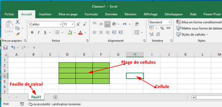

I) Définitions

1. Tableur
Un tableur est un logiciel qui permet d’effectuer des calculs sur des nombres organisés dans des tableaux et de créer facilement des représentations graphiques.
2. Classeur
Un classeur est un fichier Excel qui contient une ou plusieurs feuilles de calcul.
3. Feuille de calcul
Une feuille de calcul est l’espace de travail principal dans lequel on peut créer des tableaux et faire des calculs. Chaque feuille possède un nom.
4. Cellule
Une cellule est l’unité de base d’une feuille de calcul, correspondant à l’intersection d’une ligne et d’une colonne. Elle est identifiée par une référence composée de la lettre de la colonne et du numéro de la ligne (ex: H4).
5. Plage de cellules
Une plage de cellules est un groupe de cases voisines dans une feuille de calcul. Elle est repérée par l’adresse de la première cellule et celle de la dernière cellule (Exemple: D2:F5 )